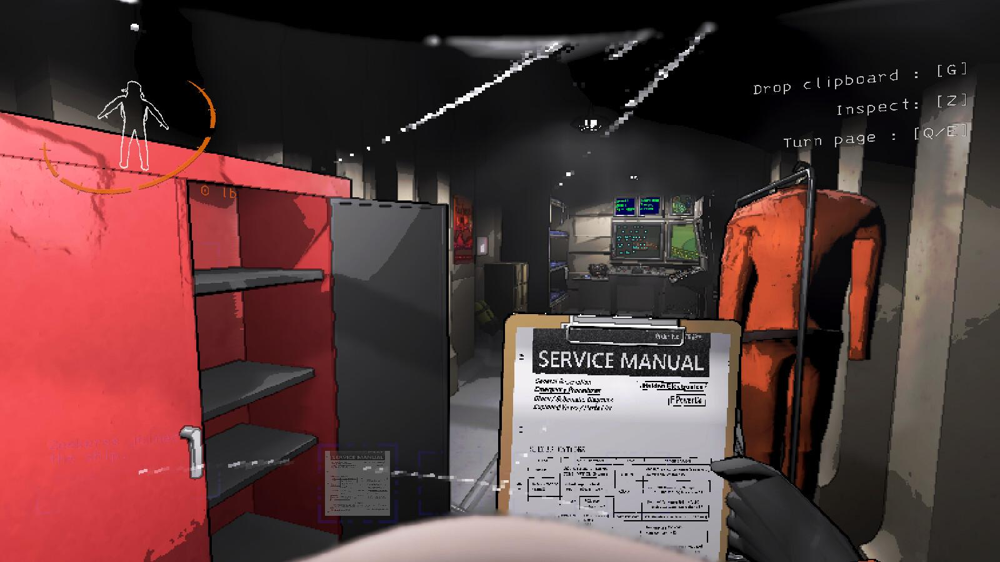

Como Funciona
"Lethal Company" é um jogo multiplayer cooperativo de terror e sobrevivência onde os jogadores assumem o papel de funcionários de uma empresa especializada em coleta de itens valiosos em locais perigosos e assombrados. O objetivo é explorar ambientes macabros, como fábricas abandonadas, hospitais assombrados e outras estruturas mal-assombradas, para coletar itens preciosos enquanto evitam e sobrevivem aos monstros e armadilhas que habitam esses locais.

Requisitos Mínimos
•Sistema operacional: Windows 10 (64 Bits)
•Processador: Intel Core i5 7400 3 GHz
•Placa de vídeo: Geforce GTX 1050 DirectX 11
•Rede: Conexão de internet banda larga
•Armazenamento: 1 GB de espaço disponível